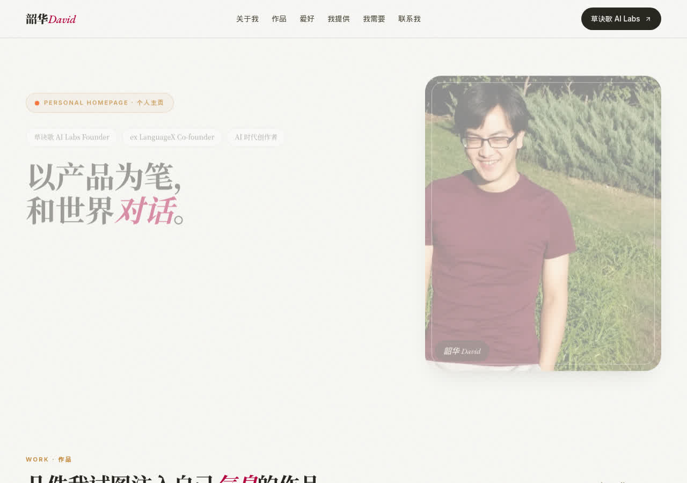

把你是谁，整理成一式两份。
一份给 agent 的 persona，一份给人看的个人主页。
草诀歌之笔 · 第一件。约 15-30 分钟。
persona 是唯一源。主页、简介、紧凑版、校准题都从它投影出来。
事实、动机、判断、边界、表达风格、禁区和校准题。以后每次开 agent，先读这一份。
给合作方看：你是谁、你能提供什么、你正在寻找什么。这张主页就是它写的。

复制下面这段，粘给你常用的模型。有文件、文字或链接，先给它读。
不需要全部都有。给得越多，写得越像你。
新作品、复盘、播客先进台账。persona 靠重写，不靠追加。
一行一条：日期、类型、标题、链接。只追加，不改旧账。
对 agent 说 司马迁，更新：<链接>。它先给你看 diff，你确认后才改 persona。
身份变了，再说 司马迁，重审。重写排序、未竟之处和盲区。
细节见 README。已有 persona 的人，从这里接着改。